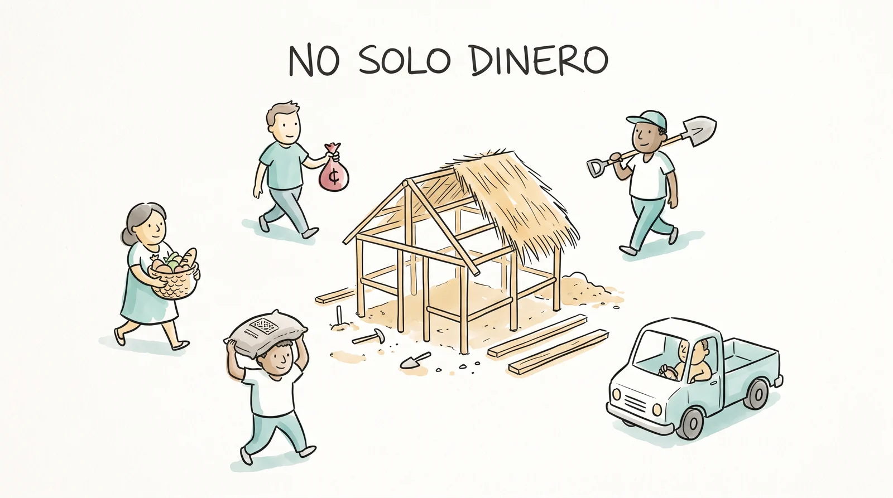
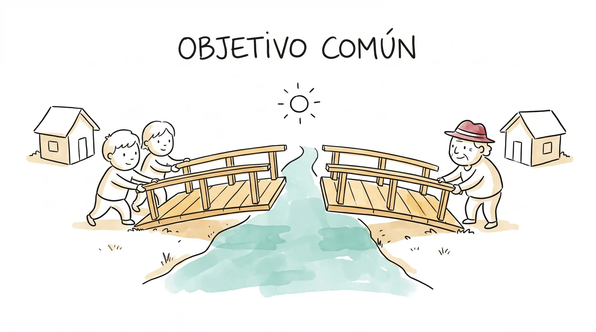
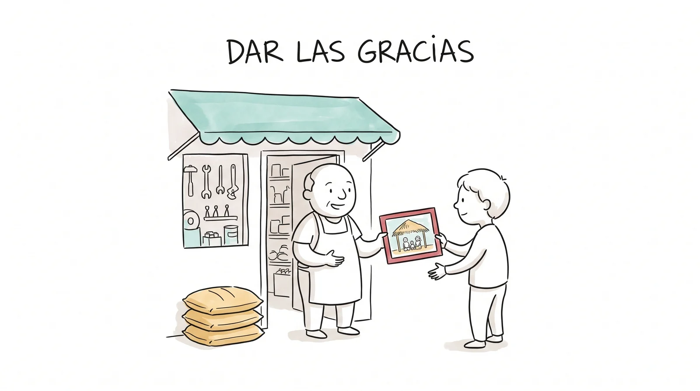

El mazo de la primera parte: cómo se consigue lo que al proyecto le falta. Se proyecta con Presentar; la tecla N muestra las notas del conductor, que traen la fuente de cada dato. Las direcciones, los programas y las reglas se revisaron el 18 de noviembre de 2026.
Gestionar recursos
Que cada equipo salga con su mapa de gestión: qué falta, a quién se le pide, qué exactamente, quién va, cuándo, y el primer mensaje ya escrito.
Salir a conseguir
Gestionar no es pedir un favor: es proponer un trato.

El presupuesto de la presa ya dice lo que falta. ¿A quién se lo van a pedir primero, y qué le van a decir?
Anotar tres respuestas tal como salgan. Casi siempre son "al municipio" o "al gobierno", y "que nos apoye". No corregir todavía: la lámina que sigue lo hace, y al final de la práctica se reescriben las tres.
Cuándo empieza la gestión
"El municipio" no contesta el teléfono, y "apoyo" no se puede entregar. La gestión empieza cuando hay una persona con cargo, una cosa con cantidad y una fecha.
Aquí mismo: la Sierra Gorda se consiguió tocando puertas
| Año | Lo que consiguieron |
|---|---|
| 1987 | Un grupo de vecinos de la sierra empieza con lo que tiene: educación ambiental en las escuelas. Sin oficina y sin presupuesto. |
| 1997 | Después de diez años de gestión, la sierra se decreta Reserva de la Biosfera. |
| 2001 | Un fondo mundial les aprueba 6.7 millones de dólares. Ellos y sus aliados juntan otros 13.9. |
| 2015 | El Banco Interamericano pone 700 mil dólares para 750 pequeños productores y hortelanas de la sierra. El grupo junta otro tanto. |
| 2023 | Un impuesto estatal al carbono, que se puede pagar cuidando bosque en la sierra, deja más de 40 millones de pesos. La regla: 80% llega al dueño del bosque. |
Es el Grupo Ecológico Sierra Gorda, de Jalpan. Empezó con manos y voz, tardó diez años en su primer gran sí, y en cada trato puso su parte.
Preguntar antes de leer la tabla: ¿qué creen que pidieron primero? Fuentes: ficha del proyecto 887 del Fondo para el Medio Ambiente Mundial (GEF, con el PNUD), aprobado el 25 de junio de 2001; ficha ME-M1101 del BID, 2015 (otros documentos dan cifras algo distintas); Forbes México y Fast Company México sobre el impuesto al carbono de Querétaro. Las fuentes no coinciden en el año de arranque (1986, 1987 o 1989) ni en el del decreto (1997 o 1998). Entre una fecha y otra hubo mucho más: en 2006 vendieron su primera captura de carbono a la Fundación de las Naciones Unidas, sumando 289 reforestaciones pequeñas de 53 comunidades.
Qué es gestionar y para qué sirve
Gestionar es conseguir que otros pongan lo que al proyecto le falta, porque a ellos también les conviene.
En México "gestionar recursos" quiere decir salir a conseguirlos: dinero, y también materiales, maquinaria, manos, permisos y firmas. Quien gestiona llega sabiendo qué gana el otro.

El objetivo común: el puente se arma desde las dos orillas.
El trato: lo que queremos, lo que quieren y lo que nos junta
Antes de pedirle algo a alguien se llena su círculo: ¿qué le importa este año a esa oficina, a ese negocio, a esa fundación? Si no se sabe, la primera visita es para preguntarlo.
Es el esquema de la presentación original del curso. El ejemplo es el del Ayuntamiento; pedir al grupo el círculo de la ferretería (que sus clientes lo vean) y el de una fundación (que el cambio se pueda medir).
No solo dinero: de cinco cosas que llegan a la obra, una es una moneda.
Recurso no quiere decir dinero
De las cinco formas en que llega una cosa al proyecto, cuatro se consiguen conversando.
Ya las conocen del presupuesto: comprado, en faena, prestado, trocado o donado. Solo lo comprado necesita dinero. Por eso primero se pregunta quién tiene la cosa, y hasta el final quién tiene el dinero para comprarla: casi siempre es más fácil que alguien dé lo que ya tiene.
Un dato para decirlo con peso: el INEGI calcula que el trabajo voluntario del país vale 1.1% de toda la economía, y que casi uno de cada dos puestos de trabajo de las organizaciones no lucrativas lo ocupa una persona voluntaria (cuenta satélite de instituciones sin fines de lucro 2024). La faena no es un adorno del presupuesto.
De cada cien pesos que se donan en México, ¿cuántos van directo de una persona a otra, sin pasar por ninguna organización?
Tres opciones al pizarrón: diez, treinta o cincuenta. Contar las manos de cada una antes de pasar a la lámina que sigue.
La gente le da a la gente
49 de cada 100 pesos
La gente da cuando conoce a quien pide y cuando ve a dónde va lo suyo. Para un grupo sin oficina y sin logotipo es buena noticia: ustedes pueden dar la cara, y una institución grande no.
Fuente: World Giving Report 2025 (Charities Aid Foundation con Cemefi), capítulo México; ese año donó el 52% de las personas adultas. La misma idea está en la guía de movilización de recursos locales de GNDR y Change the Game Academy: las personas dan a otras personas, no a las organizaciones.
El mapa de gestión: cada posible aliado se coloca según cuánto puede poner y qué tan cerca está.
Qué es el mapa y para qué sirve
Es un cuadro donde se acomoda a quién pedirle, para decidir por dónde empezar.
Con tres síes va en "Primero". Si puede y todavía no nos conoce, primero hay que acercarse. Sirve para no pasarse el mes escribiéndole a la fundación más famosa mientras la máquina que hacía falta estaba a dos cuadras.
Las tres preguntas son de Kim Klein, que lleva cuarenta años enseñando a organizaciones de base a juntar fondos: capacidad de dar, interés en la causa y contacto. La falta de contacto es lo que más se puede arreglar, y se arregla con visitas.

Dos caminos: la gestión directa, que se conversa, y la convocatoria, que se escribe.
Dos caminos para conseguir
| Gestión directa | Por convocatoria | |
|---|---|---|
| Qué es | Van con una persona que puede decidir y le proponen un trato. | Un fondo publica sus reglas y una fecha; muchos piden y un comité escoge. |
| Lo que hay que saber hacer | Conversar: escuchar, pedir y volver a preguntar. | Escribir: claro, completo y en su formato. |
| Quién pone la fecha | Ustedes. | Ellos: abre y cierra. |
| En la presa | El ejido, el Ayuntamiento, los negocios, la UAQ. | El PROCODES, un programa federal que da dinero a grupos de comunidades dentro de la Reserva. |
Un proyecto de verdad usa los dos, y casi siempre empieza por el primero: la convocatoria pide el acta del ejido y la carta del municipio, y esos papeles se consiguen conversando.
A mano alzada antes de la tabla: ¿quién ha llenado alguna vez una convocatoria o una solicitud de beca? ¿Quién ha ido a pedirle algo al delegado o a la presidencia? Es la primera lámina de la presentación original: gestión por convocatoria, habilidades de redacción; gestión directa, habilidades de conversación.

La ruta de una gestión: averiguar, acercarse, pedir, agradecer y contar qué pasó.
1 La gestión directa, en cinco pasos
- Averiguar qué le importa a esa oficina o a ese negocio, y quién decide ahí.
- Acercarse con un mensaje corto que pide quince minutos.
- Pedir en persona: una cosa, con cantidad y fecha.
- Agradecer ese mismo día, digan que sí o que no.
- Contar qué pasó: la foto de la obra con lo que pusieron.
Casi todos brincan del paso uno al tres y se olvidan del cuatro y el cinco, que son los más baratos y los que abren la puerta para la siguiente vez.
El paso tres se hace con un pitch: contar el proyecto en dos minutos. Es la segunda parte de la clase.
Averiguar: dónde se entera uno
En Querétaro, además, la ley les abre una puerta: las organizaciones de la comunidad pueden presentar sus propuestas ante el comité que planea las obras del municipio.
Ese comité es el COPLADEM, el Comité de Planeación para el Desarrollo Municipal: lo preside quien encabeza el municipio y participa en armar la propuesta de obra (Ley de Planeación del Estado de Querétaro, artículos 28 a 31 y 39; conviene revisar que no haya cambiado). La ley no dice en qué meses se arma la lista: por eso se pregunta en el mostrador.
Acercarse: el primer mensaje
| Parte | Qué lleva |
|---|---|
| El asunto | De qué se trata, en pocas palabras: "Cita: palapas en la presa de La Florida". |
| Quién soy | Nombre, de dónde y con quién vengo: "con el ejido de La Florida". |
| Por qué a usted | Una línea que demuestre que averiguaron algo de su oficina o su negocio. |
| Qué pido | Quince minutos. Solo eso. |
| Cuándo | Dos opciones de día y hora, y un teléfono. |
El WhatsApp y el correo piden la cita. La cosa se pide en persona.
Este correo le llegó a la directora de Obras Públicas. ¿Por qué no lo va a contestar?
Hay al menos cinco: el correo con apodo; el asunto que no dice de qué; dos faltas de ortografía en un renglón (envío, concertar); no dice quién escribe ni de qué proyecto; y "espero su respuesta" suena a orden. Es uno de los correos comentados de la presentación original, sin los nombres.
El mismo mensaje, bien hecho
Quien lo lee ya sabe quiénes son, por qué le escriben a ella y qué tiene que contestar. Cabe en la pantalla de un celular.
El oficio: el papel que se queda
El oficio es la petición por escrito, y la autoridad está obligada a contestarla.
Se entrega en la visita, después de platicar. Un oficio que llega solo, sin que nadie haya dado la cara, se va al montón.
Es el derecho de petición del artículo 8 de la Constitución: quien pide por escrito y con respeto tiene derecho a que la autoridad le conteste por escrito y en poco tiempo. No hay un plazo fijo para todos; en las oficinas federales la ley da tres meses. La práctica arma el oficio con los datos del renglón.

Van dos: una persona habla y enseña el plano, la otra apunta y cuida el reloj.
Pedir: la visita
Llegar en montón intimida y estorba. Y lo que no se apuntó, no se dijo: quien apunta se lleva lo prometido con las palabras exactas.
Cuando la puerta no se abre
Un "no" casi nunca es para siempre: es "no así", "no ahorita" o "no conmigo".
| Lo que pasa | Lo que se hace |
|---|---|
| Los reciben con desgano | Una pregunta sobre su trabajo cambia la plática: "¿qué es lo que más le piden de esa zona?". |
| Posponen la cita una y otra vez | A la tercera se deja el oficio sellado y se busca otra entrada: el regidor, el delegado, el comisariado. |
| "Están muy jóvenes" | No se discute: se enseña lo hecho. El permiso del ejido, las cotizaciones, el plano. |
Antes de irse se pregunta cuál de los tres "no" es. Cada uno tiene salida distinta.
Lo que no se aguanta
Ninguna gestión vale un trato humillante ni un acoso.
A veces quien recibe coquetea, hace comentarios sobre el cuerpo o condiciona el apoyo. Eso no se resuelve con técnica. Por eso se va de dos. Se termina la reunión en ese momento: "gracias, le dejamos el oficio". Ese mismo día se le cuenta al profesor o a la coordinación. Y se busca otra puerta: nadie del equipo tiene que volver a esa oficina.
La presentación original lo listaba entre los obstáculos de la entrevista. Decirlo en voz alta y sin rodeos: cuando pasa, la reacción más común es creer que hay que aguantar por el bien del proyecto.

Dar las gracias: la foto de lo que se hizo con lo que pusieron.
Agradecer y contar qué pasó
Quien dio y supo qué pasó con lo suyo vuelve a dar. Conservar a un aliado cuesta mucho menos que encontrar uno nuevo.
Por qué preguntar: en una encuesta del Center for Effective Philanthropy a organizaciones que pidieron fondos, cerca de la mitad de las rechazadas no recibió ninguna explicación. Si no se pregunta, no se sabe. La guía de GNDR le llama "recaudación de amigos": con quien dio se comparten los éxitos y también los problemas.

La convocatoria es una competencia: la ventana es chica y los aviones son muchos.
2 Por convocatoria: es una competencia
1 de 3 no era para ese fondo
Una fundación que apoya proyectos de biodiversidad contó sus rechazos: casi un tercio de las solicitudes pide algo que ese fondo no apoya. Son semanas de trabajo perdidas por no leer las reglas. De las que sí caben y contestan lo que se pregunta, gana casi la mitad.
Fuente: JRS Biodiversity Foundation, "Why we decline". Sus otros motivos de rechazo: objetivos demasiado amplios, equipo sin experiencia en el tema, plan y presupuesto débiles, y no contestar lo que se pregunta; las propuestas que evitan esos errores tienen entre 33 y 50% de probabilidad. La presentación original lo decía con una frase de Ken Hakuta: la falta de dinero no es obstáculo; la falta de una buena idea, sí.
El PROCODES da dinero para proyectos dentro de la Reserva. ¿Puede pedirlo este equipo de estudiantes?
No. Lo puede pedir un grupo de al menos cinco personas de la localidad, un ejido o una comunidad. A estudiantes, universidades y municipios no les da. En la presa, quien pide es un grupo de La Florida y el equipo acompaña: arma el proyecto, junta los papeles y ayuda a llenar el formato. Es la primera de las cuatro preguntas de la lámina que sigue.
Antes de escribir, cuatro preguntas
| La pregunta | En el PROCODES |
|---|---|
| ¿A quién le dan? | A grupos de cinco personas o más de la localidad, ejidos y comunidades. |
| ¿Qué pagan? | Solo lo que está en su lista, y hasta cierto monto. |
| ¿Qué les importa? | Cuidar la Reserva. Dan puntos extra a jóvenes y a mujeres. |
| ¿Qué piden que pongan? | El 20% en los proyectos que dejan ingreso. Puede ser en jornales y materiales. |
Se le hacen a cualquier fondo antes de escribirle. Si una sale mal, no se escribe: se busca otro fondo, o al aliado que sí puede pedir.
Reglas de operación 2026 (Diario Oficial del 15 de enero de 2026); las de 2027 salen en enero y hay que volver a leerlas. Los puntos extra son para jóvenes de 18 a 29 años. Para decidir en quince minutos si vale la pena aplicar está el semáforo de convocatorias, y el detalle en la guía del PROCODES.
El reloj de la convocatoria
Quince días hábiles.
Tres semanas: eso dura abierta la ventanilla del PROCODES, que es el periodo en que reciben solicitudes. En ese tiempo no se consigue un acta de asamblea, ni tres cotizaciones, ni la carta del municipio. Quien gana ya tenía todo en diciembre. Por eso la gestión directa va primero.
Días hábiles son los de lunes a viernes que no son feriados. La convocatoria se publica a más tardar el último día hábil de febrero.
Cómo califican: tres coladeras
En ese orden. La mejor idea del mundo no llega a la tercera coladera si le faltó una firma en la primera. Cada fondo publica su tabla de puntos: se escribe con la tabla enfrente.
En el PROCODES son doce criterios y 52 puntos, con mínimo de 20 para pasar. La presentación original traía un formato real de evaluación de la Fundación Gonzalo Río Arronte: si se tiene a la mano, se enseña aquí.
Tres costumbres de quien gana
De la presentación original, que traía además: seguir las instrucciones al pie de la letra (si piden dos cuartillas, son dos), cuidar ortografía y aritmética, y hablar de lo que al fondo le interesa. Muchos fondos piden hoy primero una hoja o un video corto y solo invitan a algunos a escribir la propuesta completa; aunque no lo pidan, mandar una hoja y preguntar "¿esto cabe en su convocatoria?" ahorra semanas.
Y en su carrera: dónde buscar si el proyecto es productivo
| Dónde | Qué da | Lo que hay que saber |
|---|---|---|
| El municipio y el estado | Implementos, semilla, sementales, material vegetativo. | El programa estatal se paga entre tres: estado, municipio y productor. Se pregunta en Desarrollo Agropecuario. |
| Producción para el Bienestar | Un pago directo al año, sin poner nada a cambio. | Es federal. Hay que estar en su padrón; incluye a quien produce miel, café y granos. |
| PROCODES y CONAFOR | Proyectos y cursos dentro de la Reserva; apoyos al manejo del monte. | Por convocatoria, a principios de año. Piden grupo, ejido o comunidad. |
| Jóvenes Construyendo el Futuro | Aprendices con beca pagada por el gobierno, hasta un año. | No es dinero para el proyecto: son manos que aprenden. |
| Las cajas de ahorro | Crédito. Se paga con intereses. | El crédito de fomento al campo (FIRA) no se pide directo: llega por cajas y bancos. |
Decirlo en voz alta: los programas cambian de nombre y de reglas cada año; lo que no cambia es el orden: primero se pregunta en la oficina más cercana qué hay este año y cuándo abre. Revisado el 18 de noviembre de 2026, con cautela. El programa estatal es "Contigo en Concurrencia para la Productividad Rural", de la Secretaría de Desarrollo Agropecuario de Querétaro; en diciembre de 2025 entregó 6 millones de pesos a más de 300 productores en Jalpan (nota de prensa). No pude confirmar porcentajes, fechas ni si hay ventanilla en Jalpan: se pregunta. Ya no existen la Financiera Nacional de Desarrollo (2023), el extensionismo federal ni la concurrencia federal (2020). Muchos apoyos piden figura legal: la más común para un grupo productivo es la sociedad de producción rural; las fundaciones suelen pedir asociación civil. Para buscar convocatorias en general siguen vivos gestionandote.org y terravivagrants.org; ya no abren corresponsabilidad.gob.mx ni recursosinternacionales.org, y el Indesol desapareció en 2021.
Un proyecto en pedidos
Nadie paga la presa entera. Mucha gente puede pagar un pedazo.
El presupuesto completo asusta; un pedido del tamaño de quien lo recibe se puede contestar. La orilla se parte en pedidos: la grava al Ayuntamiento, las palapas al PROCODES, el cemento a la ferretería, las manos al ejido. Con cinco pedidos chicos, si uno falla se cae un pedazo; con un solo bolsillo, se cae todo.
Así se ve uno hecho: la gestión de las palapas
| Lo que falta | A quién | Qué exactamente | Quién va y cuándo | Plan B |
|---|---|---|---|---|
| Permiso y manos | Asamblea del ejido | Acuerdo en acta y dos faenas de veinte personas en febrero | Dos del equipo · asamblea de enero | Faenas con la escuela |
| Piso parejo | Dirección de Obras Públicas | Dos viajes de grava y un día de máquina en marzo | Dos del equipo · segunda semana de enero | Un viaje; se empareja a mano |
| Cemento | Ferretería del pueblo | Doce bultos en febrero, con su nombre en la placa | Dos del equipo · enero | Seis bultos y cooperación |
Cada renglón se puede leer en voz alta como un encargo, y cada uno trae su plan B, porque alguno va a salir que no.
Los números son de ejemplo. En la práctica está cargado completo, con dos renglones más: la madera y la herrería por el PROCODES, y la palma del ejido. El plan B de cada renglón es el segundo escalón de la escalera de la petición, que viene en el Mazo 2.
¿Ya es un encargo?
Ocho renglones de gestión. Se lee cada uno, el grupo vota con la mano y luego se aprieta el botón.
Abrir ¿Ya es un encargo? ▸En los que todavía no son encargo, pedir que alguien lo complete en voz alta antes de leer la respuesta.
El mapa de gestión de su componente, y el primer mensaje ya escrito.
Abran la práctica de gestión con su presupuesto enfrente. Uno: escriban lo que falta, renglón por renglón. Dos: a cada renglón pónganle a quién, qué exactamente, quién va, cuándo y el plan B. Tres: armen el mensaje para pedir la cita con quien quedó en "Primero".
Abrir la práctica ▸ El acordeón de la claseRondar con una sola pregunta: "¿quién es, con cargo?". Al cierre, cada equipo lee en voz alta su renglón de "Primero" y se reescriben las tres respuestas del inicio.